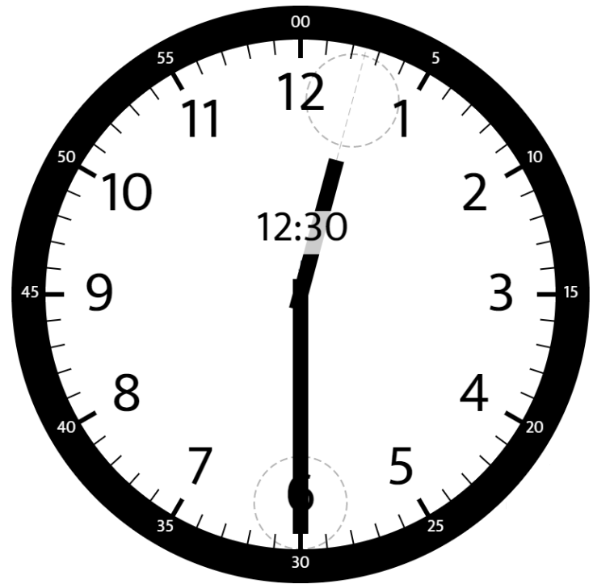
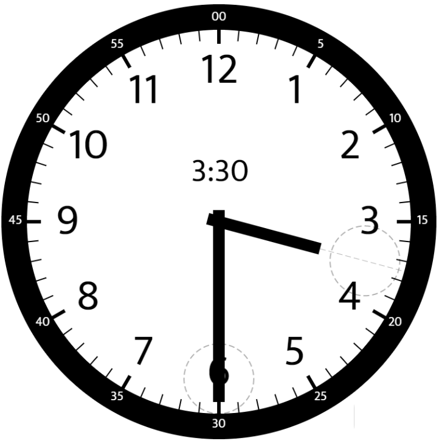
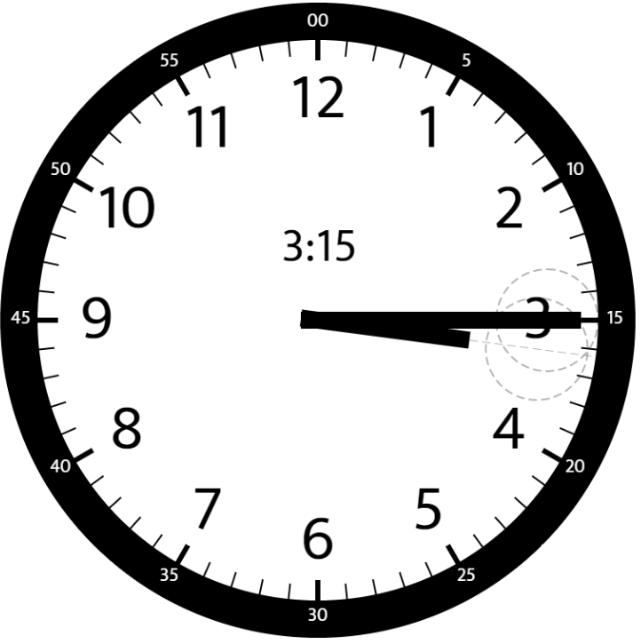

1344. 时钟指针的夹角
各自算从 12 点起算的绝对角度：时针 30°/时 + 0.5°/分，分针 6°/分；取差的劣角。
思路
- 时针角 =
(hour % 12) × 30 + minutes × 0.5：整点占 30°/格，每分钟再走 0.5°。 - 分针角 =
minutes × 6，与 hour 无关。 - 两角相减取绝对值；若超过 180° 就取
360 − diff，保证是劣角。 - 答案必是 0.5 的倍数（
minutes × 0.5），用 double 不会有精度坑。
图解
最优解
1class Solution {2 public double angleClock(int hour, int minutes) {3 // 时针从 12 点起算：整点 30°/小时，每分钟再走 0.5°4 double h = (hour % 12) * 30 + minutes * 0.5;5 // 分针每分钟 6°6 double m = minutes * 6;7 double diff = Math.abs(h - m);8 // 超过 180° 的大角换成劣角9 return Math.min(diff, 360 - diff);10 }11}题目
给你两个数 hour 和 minutes 。请你返回在时钟上，由给定时间的时针和分针组成的较小角的角度（60 单位制）。
示例 1：

输入：hour = 12, minutes = 30 输出：165
示例 2：

输入：hour = 3, minutes = 30 输出；75
示例 3：

输入：hour = 3, minutes = 15 输出：7.5
示例 4：
输入：hour = 4, minutes = 50 输出：155
示例 5：
输入：hour = 12, minutes = 0 输出：0
提示：
1 <= hour <= 120 <= minutes <= 59- 与标准答案误差在
10^-5以内的结果都被视为正确结果。
题面取自力扣当前版本。
数据快照 2026-11-04。题面版权归力扣所有，本站点仅供本人学习使用，请勿对外发布。